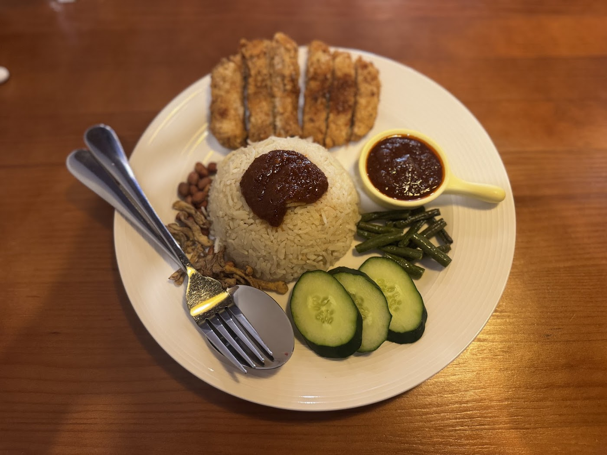

品牌故事
店名來自會用手語溝通的大猩猩 Koko
KOKO Cafe 的開頭是一個關於「溝通」的比喻：Koko 是一隻學會手語的大猩猩，讓不同物種之間也能理解彼此。店內把這個想法落到盤子上——植物性為主、穆斯林友善，讓素食者、不吃豬肉、不吃蛋奶的旅客，都能在同一張桌子上點到自己能吃的那一份。
餐點走的是蘭卡威日常吃的馬來家常路線：椰漿飯配蕈菇扒、椰漿或羅望子口味的叻沙、哥羅面、羅惹與自家制素漢堡。咖啡吧檯使用 specialty 豆，拿鐵可換燕麥奶；飲品端有招牌玫瑰拿鐵，以及康普茶與 water kefir 系列。
「非常道地的素食餐點。餐點以馬來西亞菜為主，咖啡也很驚艷，可以換成燕麥奶。」
Yi-Chien，公開評論
